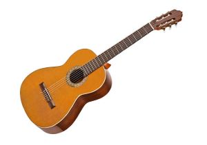
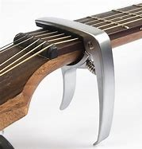
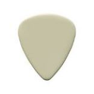

The first thing is that you need to know is how to hold a guitar.
It will depend if you are a right handed or left handed guitarist. If you have
a right handed guitar, then you would hold the guitar horizontally, and the neck would go on the
left side and the body would rest on your lap on the other side. The next thing is that you should know the
names of the strings. The thickest one is the low E string then the one after it is the A string
then after that it is the D string, after that it is the G string, and then it is the B string, and the
last sting is called the high E string. When you start pressing down on the strings it will hurt your fingers
in the start but then your fingers will get use to it. Also the are boxes on the guitar neck those are called the frets. Those help
show what each note sounds like when you press down on them. The closer you go down the neck and press down on the string the hgher the note.

